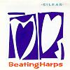

Celtic Lyrics Corner > Artists & Groups > Sìleas > Beating Harps > The Silver Whistle
|  | The Silver Whistle |
| Credits : | Traditional |
|
a) An Fhìdeag Airgid
b) Prince Charlie |
|
| Appears On : | Beating Harps |
| Language : | Gàidhlig (Scottish Gaelic) |
| Other Versions : |
a) "
An Fhideag Airgid
" on Capercaillie's album Glenfinnan
" An Fhideag Airgid " on Flora MacNeil's album Craobh Nan Ubhal " An Fhideag Airgid " on Karen Matheson's album The Dreaming Sea |
| Lyrics : | English Translation : |
| Cò a sheinneas an fhideag airgid? | Who will sound the silver whistle? |
| Sèist : | Chorus (after each verse) : |
| Ho ro hu o hu ill eò | Ho ro hu o hu ill eò |
| Hi ri ill iù eò, hi ri ill iù eò | Hi ri ill iù eò, hi ri ill iù eò |
| Mac mo righ-sa tighinn a dh'Alba | When the son of my king comes to Scotland |
| Air luing mhòir nar tri chrann airgid | In the great ship of three silver masts |
| 'S a chur fàilt air Mac 'ic Ailein | And welcomes Clanranald |
| 'S air Mac Dhomhnaill Mhòir o'n Cheapaich | And Big MacDonald of Keppoch |
| 'S chuireadh iad Righ Seòras dhachaidh | They will send King George back home |
| Do Hanòbhar a null fairis | To Hanover over there |
| 'S co a sheinneas an fhideag airgid? | And who will sound the silver whistle? |
| Cò theireadh nach seinninn fhin i? | Who would say that we wouldn't play it ourselves? |